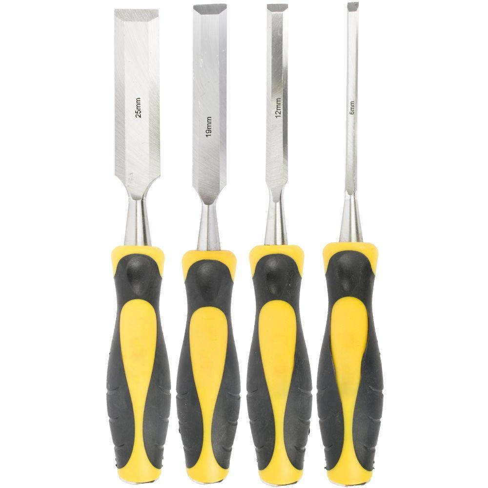
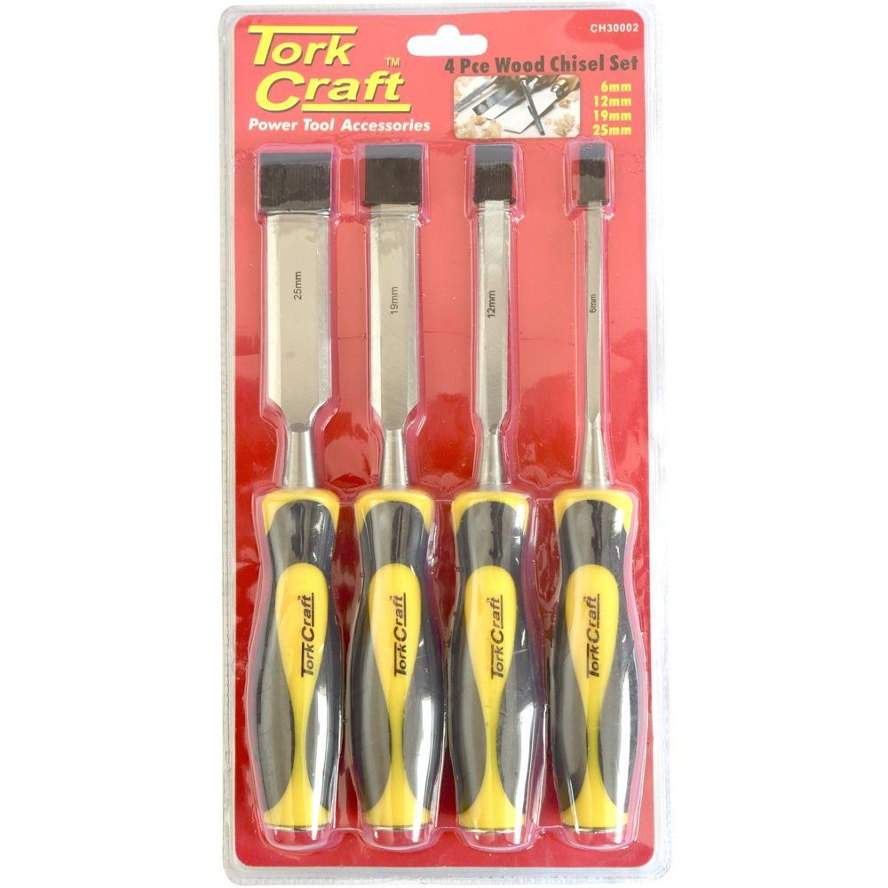

CH30002


Sizes: 6, 12, 19 and 25mm
Classification: Standard (Yellow)

This 4-piece wood chisel set is an essential addition to any woodworker&s toolkit, offering precision and durability for a variety of tasks. The set is carefully selected to provide the core sizes necessary for most woodworking applications.
The set includes four sizes: 6mm, 12mm, 19mm, and 25mm. This range provides versatility for everything from detailed paring and trimming with the smaller chisels to shaping joints and removing material with the larger ones. This specific selection ensures you have the right tool for both fine detail work and broader material removal.
Each chisel is crafted with high-quality hardened steel blades that are designed to hold a sharp edge longer, ensuring consistent and clean cuts through various types of wood. They are built for resilience and dependable performance project after project. The robust blades are designed for demanding use and easy resharpening.
The chisels are equipped with ergonomic handles, often made of durable plastic or wood, shaped for comfort and a secure grip. These robust handles are also designed to withstand forceful mallet strikes, allowing for effective and safe heavy-duty use in creating mortises and tenons.
Application:
TIP:
The chisels can be sharpened with an oil or a diamond whetstone. We recommend using the DMT® range of diamond whetstones.